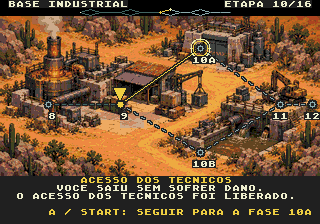
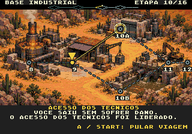

PLAGUEFALL / UX DO MAPA / PROPOSTA 01
Destino, motivo, ação.
Ver versão implementada e capturas da ROM
Proposta aprovada • Referência anterior à integraçãoO rodapé começa diretamente pelo nome da fase, seguido do resultado e da consequência da rota. Sem “AGORA” no cabeçalho e sem o prefixo “PRÓXIMA: 10A —”. O nome da fase e as explicações ficam centralizados. O comando de pular viagem fica alinhado à direita, com margem de 8 px.
Atual — captura da ROM

Proposta — composição para aprovação

ACESSO DOS TÉCNICOSVocê saiu sem sofrer dano.
O acesso dos técnicos foi liberado.
A / START: SEGUIR PARA A FASE 10A
Avaliação de UX- O nome da fase aparece diretamente, sem rótulos ou números antes dele.
- Condição e consequência aparecem em frases completas, sem o termo “path”.
- O texto principal é centralizado; os comandos ficam à direita, com margem de 8 px.
- Uma linha vazia separa o texto do botão; a borda inferior mantém 8 px livres.
- Desvios explicam o ocorrido, sem chamar perda do resgate de sucesso.
Conferência em 320 × 224.
Mesma fonte de 8 × 8 do jogo, até 38 caracteres por linha e cores compatíveis com a interface. Os acentos aparecem no texto de apoio desta página; a prévia segue o conjunto de glifos atual da ROM.
O uso de duas cores no texto pode aproveitar PAL0/PAL3 nesta tela, sem duplicar a fonte. É uma proposta técnica; nenhum recurso do jogo foi modificado.
Durante a viagem
Ao iniciar o deslocamento, o comando muda para “A / START: PULAR VIAGEM”, alinhado à direita, na mesma margem do comando de seguir.
